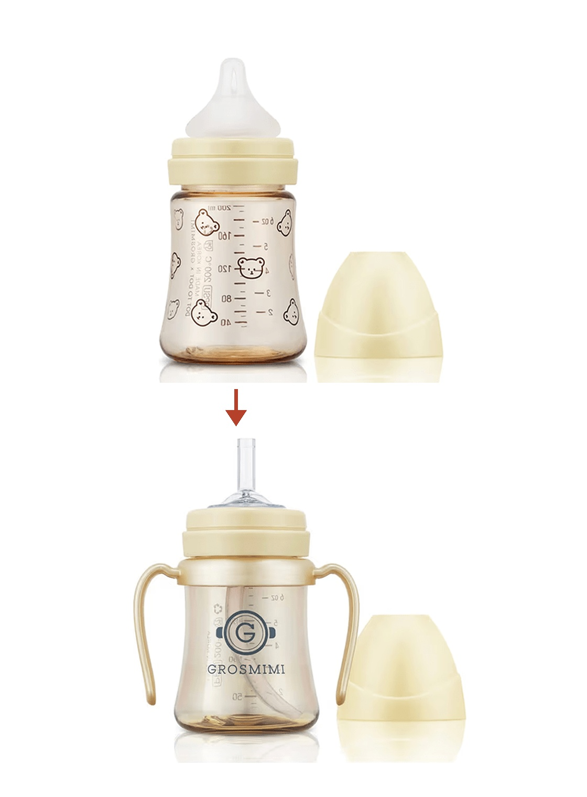
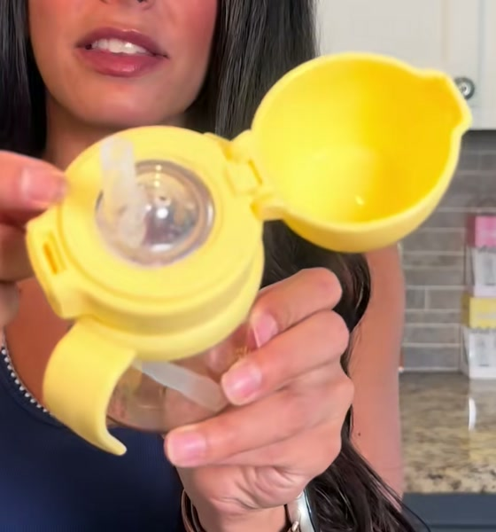
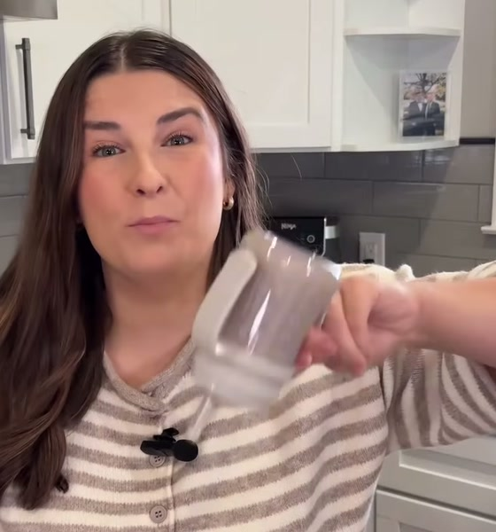
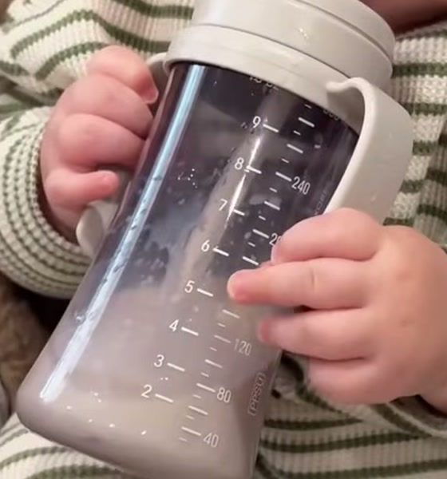
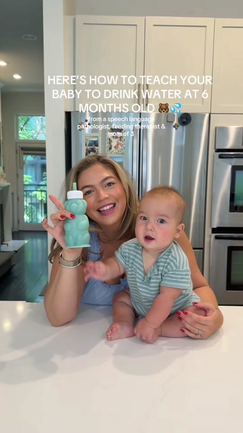
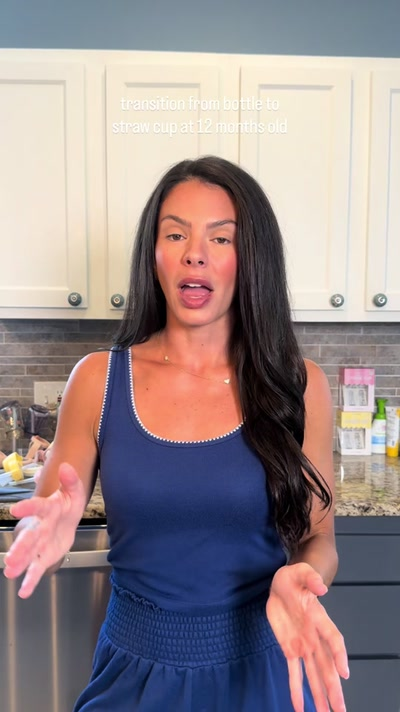
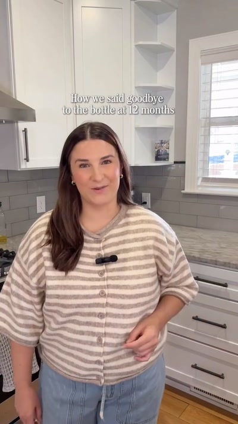

캡션
공동 게시
@grosmimi_japan 과의 공동 게시(콜라보 게시)로 설정해 주세요 ("공동 작성자 초대"에서)
브랜드명 표기
그로미미(GROSMIMI), Stage 1 스트로
해시태그
※ 유상·무상 불문 공통. 해시태그는 실제 투고용이라 일본어 원문 그대로입니다.

6~12개월: 첫 빨대 연습 시기.
돌 전후에는 영유아 검진과 어린이집 입소를 앞두고
"젖병 졸업" 압박이 커진다.
딱딱한 빨대는 씹기만 하고, 빨지 못한 채 고개를 홱.
수분이 부족한 건 아닐까 불안해져, 머그를 몇 개씩 사고도 거부당하는 "머그 방황(マグ迷い)"에 빠진다.
처음으로 빨대로 빨아올린 한 모금, 그리고 그 직후 엄마를 올려다보는 얼굴.
대부분의 빨대는 아기가 익숙하게 빨아 온 젖병 젖꼭지보다 훨씬 딱딱하다. 그로미미 Stage 1 스트로는 젖꼭지처럼 부드러워서, 스트로머그를 "다음 한 걸음"으로 자연스럽게 시작할 수 있다.
엄마들이 "우리 애도 그래" 하고 느끼는 장면에서 시작. 빨대를 싫어하는 아기나, 빨대 끝을 손가락으로 집어 보는 손 등.
먼저 "왜"를 한마디로 (전문가 이야기를 인용해도 OK). 다음으로 젖병 젖꼭지와 Stage 1 스트로를 카메라 앞에서 비교해 보여준다.
아기가 실제로 스트로머그로 마시는 모습을 보여준다.
아기가 막히는 건 입이 기억하는 젖꼭지보다 빨대가 딱딱할 때. 부드러운 Stage 1 음용구라면 젖병의 "연장선"으로 받아들이기 쉽다.
한 번에 전부 바꾸지 말 것. 젖꼭지처럼 부드러운 Stage 1 스트로라면 익숙한 부드러움 그대로 머그에 적응해 갈 수 있다.
빨대 연습은 생후 6개월 무렵부터 시작할 수 있다 (이 머그도 6개월부터 사용 가능). 조급해하지 않아도 괜찮다. 컵으로 마시는 연습과 병행해도 OK.
부드러운 실리콘 음용구는 잇몸에 부담이 적은 "다음 한 걸음".
※ 그대로 인용해도, 본인의 말로 바꿔 말해도 OK. 단정적인 의료 효과 표현("치열이 좋아진다" 등)은 피해 주세요.

부드러움을 클로즈업으로 보여주기

카메라를 향해 말 걸기

아기가 실제로 머그로 마시는 모습 보여주기



@grosmimi_japan 과의 공동 게시(콜라보 게시)로 설정해 주세요 ("공동 작성자 초대"에서)
그로미미(GROSMIMI), Stage 1 스트로
※ 유상·무상 불문 공통. 해시태그는 실제 투고용이라 일본어 원문 그대로입니다.